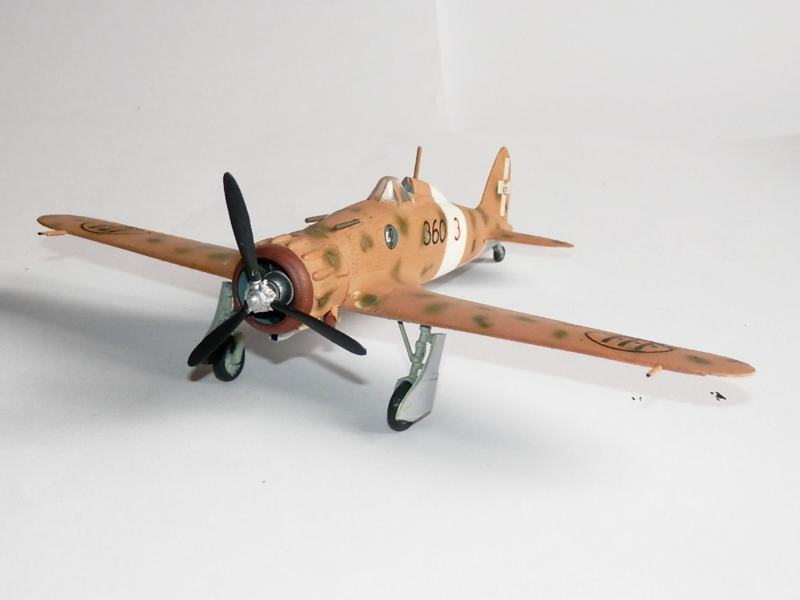
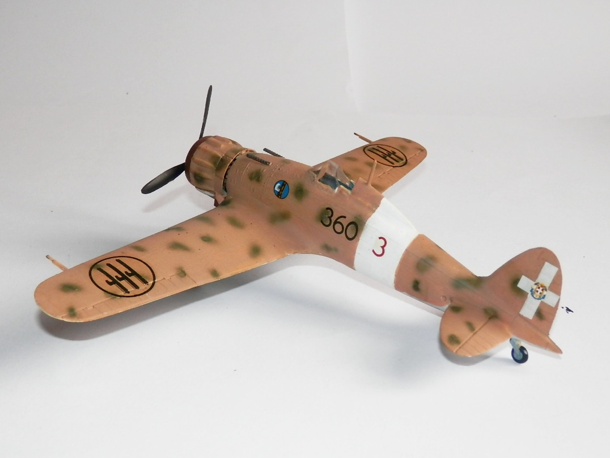

Aerei · scale model archive
Macchi MC200 Saetta
Macchi MC200 Saetta — Kit: SMER, Scale: 1/48. Regia Aeronautica 360a Squadriglia

Photo gallery

English description
Regia Aeronautica 360a Squadriglia
Descrizione italiana
Regia Aeronautica, 360ª Squadriglia.